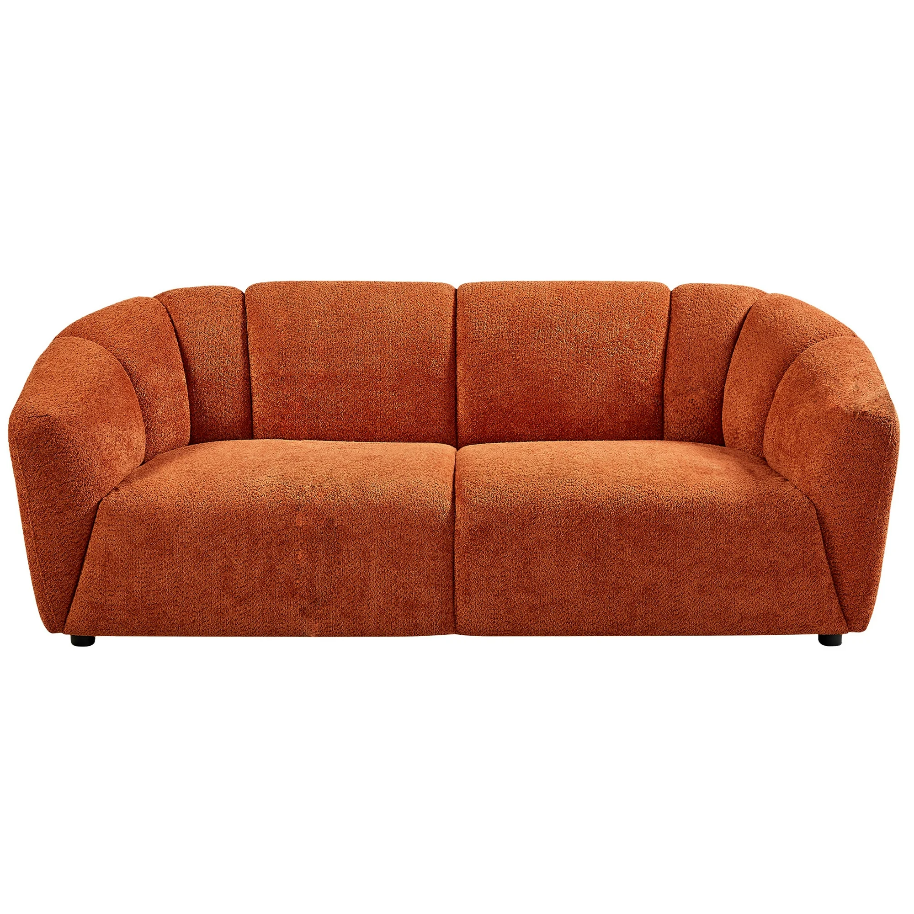
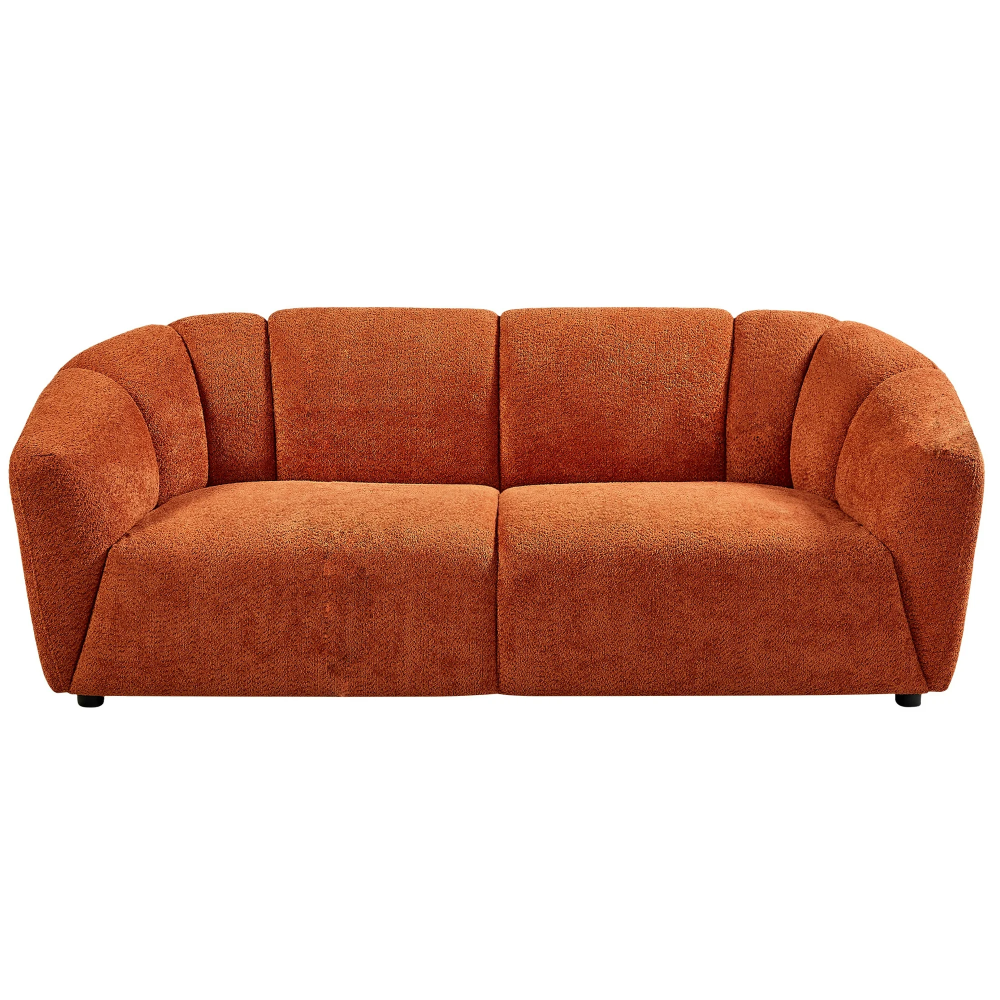
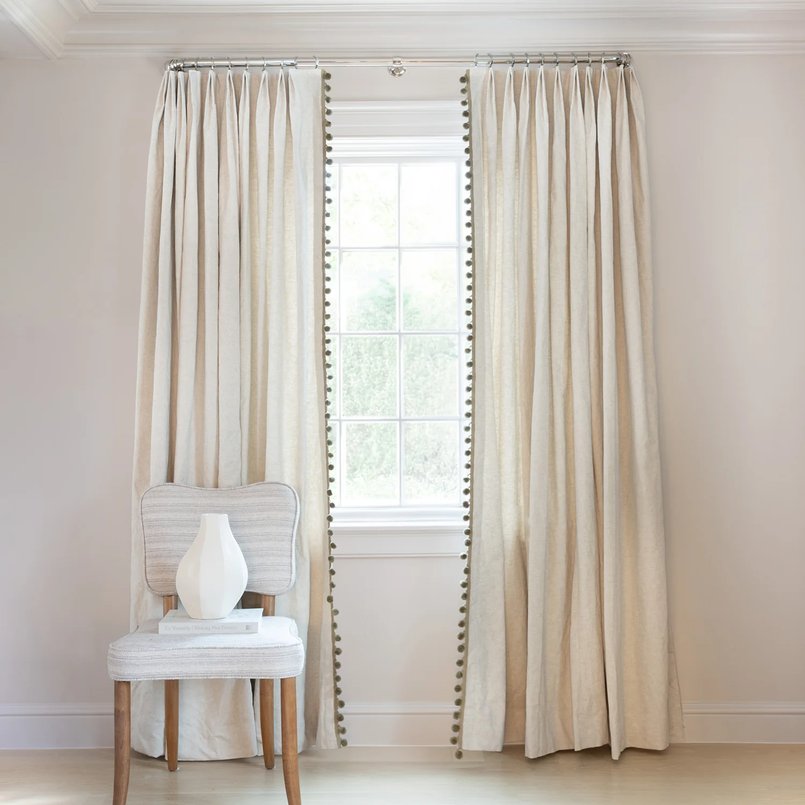
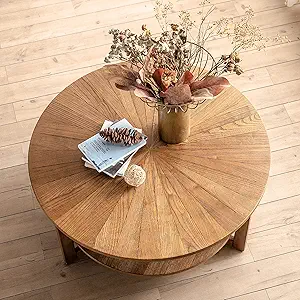
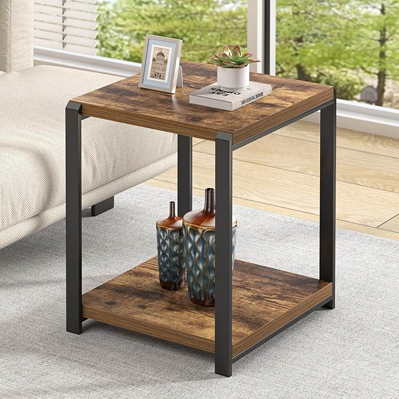
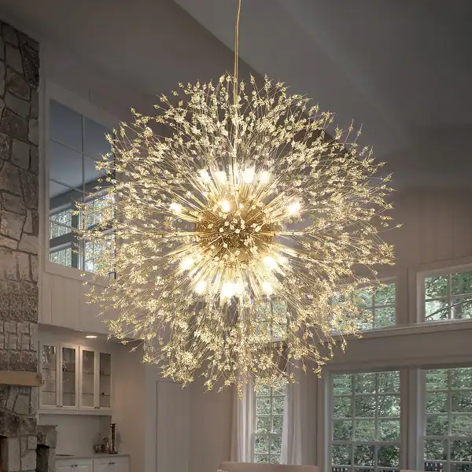

The difference between sofa and couch is that sofa has armrests, while couch does not. There isn't a large difference in terms of seating, but if you prefer flatter armrests then a sofa is a good choice. If you want your living room to look more elegant and gorgeous, then a couch is a better option.

There are large differences between curtains and blinds that curtains are generally made of fabric, while blinds are made of aluminum alloy. In terms of beauty, curtains come in a variety of styles and colors that can make a space look more wonderful, while blinds tend to have a more uniform appearance. In terms of using, blinds are easier to clean than fabric curtains.
 The first difference between the Center table and the end table is the shapes. The shapes of the center table are more, such as square and round, but the end table is generally rectangle. The second difference is the placement that the center table is usually placed in the center of the living room and surrounded by the sofa, while the end table is generally placed on the side of the sofa. The end table is more convenient than the center table because it is close to people but the center table is more beauty for the space.

The chandelier and the recessed light, one suspended from the ceiling and the other embedded within the ceiling. Chandeliers have a lot of styles , and If you matched with smae styles, they can beautify the entire space. Recessed lights are easier to clean than chandeliers because chandeliers tend to accumulate a lot of dust.


If you choose rug, there are many styles and materials of rugs you can choose, and rugs can protect the floor from friction. If you choose not rug then a cleaning task will be reduced, because cleaning rugs is a complex task.